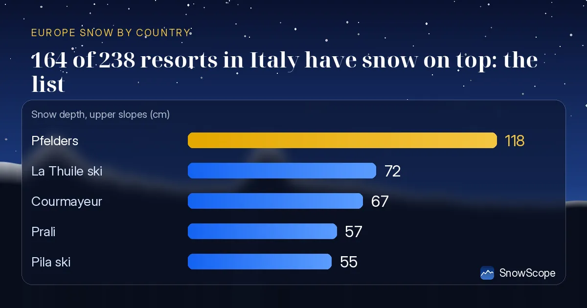

164 of 238 resorts in Italy have snow on top: the list
164 of the 238 resorts in Italy have snow on their upper slopes today. Pfelders leads with 29 cm.
See the live snow forecast for Pfelders in the SnowScope appSnow depth, powder alerts and the 3D map, free.
Which resorts have snow
Snow on the upper slopes is not the same as open runs: lifts open when the base is deep enough to groom, and the resort decides that.
The white area in Italy stands at about 24,510 km² today, about the same as yesterday. Roughly 26 % of the country's mapped mountains and hills are covered.
| Resort | Snow depth | New snow, 72 h | Coming, next days | Top |
|---|---|---|---|---|
| Pfelders | 118 cm | 15 cm | 11 cm | 2,500 m |
| La Thuile ski | 72 cm | 97 cm | 71 cm | 2,608 m |
| Courmayeur | 67 cm | 105 cm | 76 cm | 2,749 m |
| Prali | 57 cm | 24 cm | 23 cm | – |
| Pila ski | 55 cm | 53 cm | 36 cm | 2,723 m |

Shortlist for the weekend
Pfelders leads with 118 cm on its upper slopes.
Close behind: La Thuile ski (72 cm), Courmayeur (67 cm), Prali (57 cm) and Pila ski (55 cm).
At Pfelders: 15 cm of fresh snow over three days, 11 cm more expected by Tuesday 24 November.
At La Thuile ski: 97 cm of fresh snow over three days, 71 cm more expected by Tuesday 24 November.
Snow lies on the upper slopes of 164 out of 238 resorts in Italy.
The rest of the shortlist: Courmayeur: 67 cm on top, 105 cm in three days, 76 cm expected; Prali: 57 cm on top, 24 cm in three days, 23 cm expected; Pila ski: 55 cm on top, 53 cm in three days, 36 cm expected.

From the valleys to the summits
Climb and the snow gets deeper: 500-1,000 m: on average under 1 cm (1 % of the ground white); 1,000-1,500 m: on average under 1 cm (17 % of the ground white); 1,500-2,000 m: on average 3 cm (66 % of the ground white); 2,000-2,500 m: on average 11 cm (94 % of the ground white); above 2,500 m: on average 27 cm (99 % white).
What is coming
The week ahead could bring up to 62 cm, 40 cm of it in the next three days.
The snowiest day looks like Sunday 22 November, with up to 37 cm in the snowiest spots.
Further out, days 8 to 14 show up to 23 cm on the snowiest slopes.
Seven days of snow cover
Snow cover in Italy over the last days: 16 November 21,210 km²; 17 November 17,790 km²; 18 November 19,640 km²; 19 November 24,470 km²; 20 November 20,940 km²; 21 November 24,510 km².
The deepest resort changed hands 4 times this week.
What it means on the slopes
The new snow freshens the upper slopes; lower down it may already be heavy or wet.
With more snow in the forecast, the next days should improve things further.
Snow on the ground
Compared with 19,930 km² seven days ago, that is 4,580 km² more. Below about 1,500 m the slopes are mostly green or brown.
New snow in the last three days
Three-day totals peak at 55 cm, around the Aosta Valley, the Piedmont Alps and the central Apennines.
In the past day, up to 8 cm was added.
At least 5 cm fell over some 20,450 km².
How this start compares
Resort by resort, today against a normal 21 November: Pfelders: 29 cm at about 2,050 m, against 25 cm in a normal year; La Thuile ski: 79 cm at about 2,038 m, against 28 cm in a normal year; Courmayeur: 84 cm at about 1,976 m, against 25 cm in a normal year; Prali: 19 cm at about 2,173 m, against 17 cm in a normal year.
4 of these 4 resorts are above their usual depth for the date.
These depths are for one height on each mountain, below the top, so they read lower than the upper-slope numbers further down.
In past winters the best snow at Pfelders usually came late February / early March.
The neighbours today
For comparison, the neighbours on the same day: Austria: 56 % white, deepest Stubaier Gletscher with 63 cm, up to 35 cm in the week ahead; Switzerland: 64 % white, deepest Anzère with 86 cm, up to 74 cm in the week ahead.
Planning a day on the snow
Above 2,000 m the ground is almost fully white (94 % covered), so runs up there have a continuous base.
Between 1,500 m and 2,000 m the cover is patchy, about 66 % white: expect grass and stones between the snow.
Below 1,000 m the slopes are still almost bare.
If you can choose the day, go after Sunday 22 November: the fresh snow then has time to settle and the roads to be cleared.
Tips for skiers
- Snow above the tree line can be wind-packed: watch the ridges.
- Fresh snow on a cold base sticks badly: take care on steep slopes.
- Roads to the higher resorts may need winter tyres or chains.
About these numbers
Resort snow depths are the deepest snow on the resort's upper slopes from the SnowScope snow model (about 1 km, run of 21 November); they are estimates for an area, not a measurement at one point. Station values are measurements on the date shown. Forecasts can change. Always read the official avalanche bulletin before going off-piste.
Cite this report
For research, teaching or the press: the numbers and charts are free to reuse under CC BY 4.0 with this citation.
SnowScope (2026), 164 of 238 resorts in Italy have snow on top: the list, https://snowscope.app/blog/en/2026/11/italy-resorts-with-snow-21-november-2026.html, accessed 2026-11-21
SnowScope (Atlas Labs). (2026, November 21). 164 of 238 resorts in Italy have snow on top: the list. SnowScope snow reports. https://snowscope.app/blog/en/2026/11/italy-resorts-with-snow-21-november-2026.html
BibTeX
@misc{snowscope2026italyresortswithsnow21no,
author = {{SnowScope (Atlas Labs)}},
title = {164 of 238 resorts in Italy have snow on top: the list},
year = {2026},
month = nov,
howpublished = {\url{https://snowscope.app/blog/en/2026/11/italy-resorts-with-snow-21-november-2026.html}},
note = {Published 2026-11-21 11:49 UTC; accessed 2026-11-21}
}· CC BY 4.0 · Methods, data and tools →
Pfelders: snow and temperature by height, this winter vs last (tools) →
Follow Pfelders
Free: a message when fresh snow is coming, and the forecast every morning.
More snow reports

Tornik on Zlatibor had up to 39 cm on its upper slopes on 15 November 2026; by Wednesday it had melted. Kopaonik barely turned white. The week day by day and what comes next.

Savin Kuk above Žabljak picked up 22 cm of snow from 13 to 19 November and still has 6 cm today. Kolašin 1450 and 1600 are bare. The week day by day, and the next chances.

Up to 30 cm of snow fell on northern Velebit and Bjelolasica on Friday 13 November 2026. By Tuesday it was gone. Day by day, what the mountains kept, and when snow comes back.